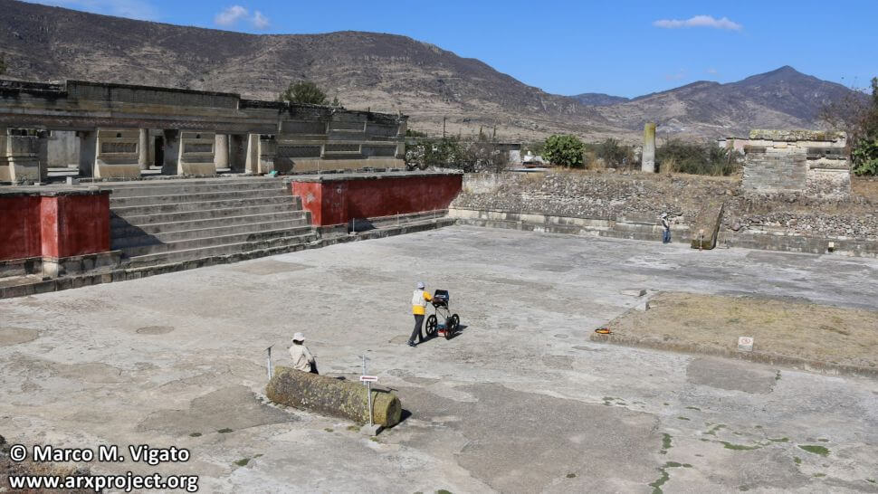
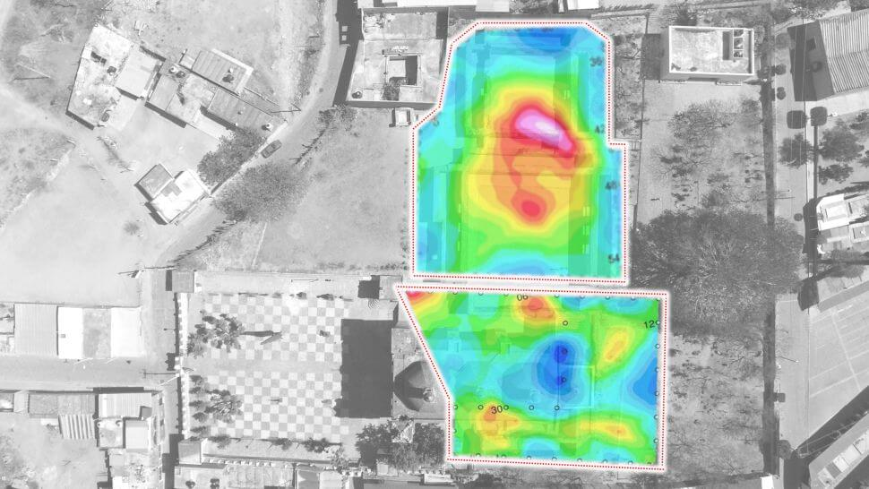
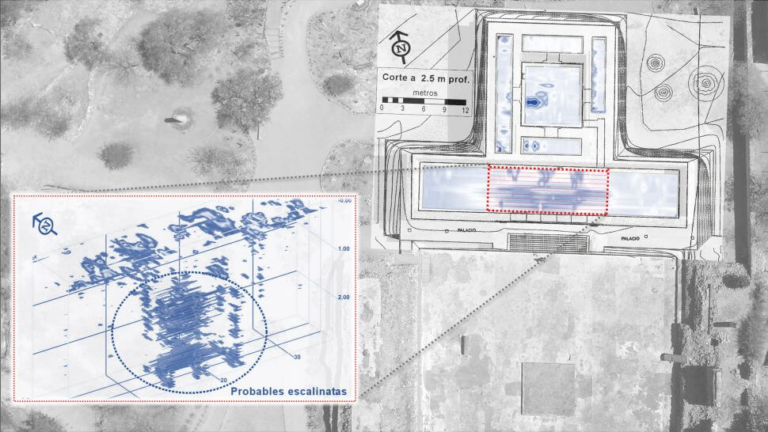

ဒီ “မြေအောက်ကမ္ဘာဝင်ပေါက်” ကို လွန်ခဲ့တဲ့ နှစ် တစ်ထောင်ကျော် ခန့်က ဒီဒေသမှာ ဖွံ့ဖြိုးခဲ့တဲ့ ဇာပိုတက် (Zapotec) လူမျိုးနွယ် တွေက တည်ဆောက်ခဲ့တာ ဖြစ်ပါတယ်။ ဒီ ဝင်ပေါက် ဖြစ်တဲ့ မြေအောက် အဆောက်အဦ ကြီးထဲမှာ မြေအောက် ဥမင်လှိုင်ခေါင်း တွေနဲ့ မြေအောက်ခန်းတွေ ပါဝင်ပါတယ်။
ဒီ ဇာပိုတက် လူမျိုးစု တွေဟာ ယခု မက္ကဆီကို နိုင်ငံ အိုယာဇာကာ ဒေသ (Oaxaca) ဒေသမှာ ခရစ်မပေါ်မီ ဘီစီ ၆ ရာစု ခန့်က မြို့ပြနိုင်ငံတွေ ထူထောင် နိုင်ခဲ့ကြပါတယ်။ ဒီ့နောက်မှာတော့ အလျှင်အမြန် အင််အား ကြီးထွားလာပြီး ကြီးကျယ်ခန့်ငြားတဲ့ အဆောက်အဦ အများအပြားကိုလဲ တည်ဆောက်ခဲ့ ကြပါတယ်။
ဒီ ဇာပိုတက် တွေရဲ့ သင်္ချိုင်းဂူ တွေထဲမှာ ဆိုရင်လဲ အဖိုးတန် ရတနာ အများအပြားကို ထည့်သွင်း မြှုပ်နှံ ထားခဲ့ ကြပါတယ်။ သူတို့ ကိုးကွယ်တဲ့ နတ်ဘုရား တွေကို ပူဇော်တဲ့ အဆောက်အဦ အများအပြားကိုလဲ တည်ဆောက်ခဲ့ ကြပါသေးတယ်။

တောင်အမေရိက တိုက်က စပိန် နယ်ချဲ့တွေ ဝင်ရောက်လာပြီးတဲ့ နောက်မှာတော့ ဒီ ဘုရားကျောင်းပျက်ကြီးက ကျောက်တုံးတွေကို အသုံးချပြီး ဒီ နေရာမှာပဲ San Pablo Apostol ဘုရားကျောင်းကို တည်ဆောက်ခဲ့ ကြပါတယ်။
ဒေသ ပါးစပ်ရာဇဝင် အရဆို ဒီ ဘုရားကျောင်းကို မြေအောက် ကမ္ဘာ ကို သွားတဲ့ ဝင်ပေါက် အပေါ်မှာ ပိတ်ပြီး တည်ဆောက်ခဲ့တယ်လို့ ဆိုကြပါတယ်။ ဒီ မြေအောက်ကမ္ဘာဟာ ဇာပိုတက် တို့ရဲ့ ဘာသာရေး ယုံကြည်မှုအရ သေဆုံးသွား သူတွေရဲ့ ဝိဉာဉ်တွေ သွားရောက် နားခိုရာ အရပ် ဖြစ်ပါတယ်။
အရပ် ပါးစပ်ရာဇဝင် အရ အရင်က ဒီနေရာမှာ ရှိခဲ့တဲ့ ဇာပိုတက် ဘုရားကျောင်းကို လိုင်ယိုဘား ( Lyobaa) လို့ ခေါ်ပါတယ်။ ဒါဟာ “နားခိုရာ” လို့ အဓိပ္ပါယ် ရတဲ့ အမည် ဖြစ်ပါတယ်။ ပါးစပ် ရာဇဝင် တွေအရ ဒီ ဘုရားကျောင်း ကြီးရဲ့ အောက်ထဲမှာ အလွန် ရှုပ်ထွေးတဲ့ မြေအောက် လှိုဏ်ခေါင်းတွေ ရှိပြီး ဒီ လှိုင်ခေါင်းတွေရဲ့ အဆုံးမှာ “မြေအောက် ဝိဉာဉ် ကမ္ဘာ” ကို ဝင်ရောက်ရာ ဝင်ပေါက် ရှိတယ်ဆိုပြီး ယုံကြည် ကြပါတယ်။

ဒီနေရာကို တူးဖော်ခြင်း မပြုပဲ စစ်ဆေးနိုင်ဖို့ ခေတ်မှီ မြေအောက် သုတေသန ရှာဖွေနည်း ၃ နည်းကို အသုံးပြုခဲ့ ကြပါတယ်။ ပထမ နည်းစနစ်ကို မြေအောက်ထဲကို ရေဒါ နဲ့ ထောက်လှမ်း ရှာဖွေတဲ့ နည်းလမ်း ဖြစ်ပါတယ်။ နောက်ပြီး မြေအောက်တွင်းက တုန်ခါလှိုင်းတွေကို တိုင်းတာပြီး ကွန်ပြူတာနဲ့ ပြန်လည် ပုံဖေါ်ယူတဲ့ seismic noise tomography နည်းပညာကိုလဲ အသုံးပြု ခဲ့ကြပါ သေးတယ်။ ပြီးတော့ မြေအောက်က လျှပ်စစ်ဓါတ် စီးဆင်းမှုကို အနှောက်အယှက် ဖြစ်စေတဲ့ အရာဝတ္ထုတွေ၊ အခန်းတွေ ရှိမရှိ ပုံဖေါ် ကြည့်နိုင်တဲ့ electrical resistivity tomography နည်းပညာ ကိုလဲအသုံးပြုခဲ့ ကြပါတယ်။
ဒီ နည်းစနစ်တွေဟာ မြေအောက်ထဲမှာ ရေဒါလှိုင်းတွေ၊ လျှပ်စစ်သံလိုက် လှိုင်းတွေနဲ့ ငလျှင်လှိုင်းတွေ ဖြတ်သန်း သွားချိန်မှာ ဖြစ်ပေါ်တဲ့ ပြောင်းလဲမှုတွေကို ဖမ်းယူပြီး ကွန်ပြူတာနဲ့ ပြန်လည် ပုံဖေါ်ယူတဲ့ နည်းပညာတွေ ဖြစ်ကြပါတယ်။ ဒီ နည်းပညာကို အသုံးပြုပြီး မြေအောက်ထဲ မြုပ်နေတဲ့ အဆောက်အဦတွေ နဲ့ မြေအောက်ခန်း တွေကို အောင်မြင်စွာ ရှာဖွေ နိုင်ခဲ့ပြီး ဖြစ်ပါတယ်။
ဒီ နည်းစနစ် တွေနဲ့ ရလာတဲ့ အချက်အလက် တွေကို ကွန်ပြူတာထဲ ထည့်သွင်းပြီး သုံးဖက်မြင် 3D ပုံတူကို တည်ဆောက် ယူနိုင် ခဲ့ကြပါတယ်။

ဒီတွေ့ရှိရတဲ့ လှိုဏ်ခေါင်းတွေနဲ့ မြေအောက်ခန်း ကြီးဟာ ရှေး ဇာပိုတက် လူမျိုးတို့ရဲ့ “မြေအောက်ကမ္ဘာ” ဆိုတဲ့ ယုံကြည်မှုနဲ့ ကိုက်ညီ နေပါတယ်လို ရှေးဟောင်း သုတေသီ တွေက ရှင်းပြပါတယ်။ ဒီ ဒေသကို စပိန် ကိုလိုနီ နယ်ချဲ့တွေ ဝင်ရောက်လာ ချိန်မှာလဲ ဒေသခံ ဘာသာရေး ယုံကြည်သူတွေ မြေအောက်ခန်း ကြီးတွေထဲမှာ ကျင်းပြ ပြုလုပ်ခဲ့ကြတဲ့ ဘာသာရေး အခမ်းအနားတွေနဲ့ ယဇ်ပူဇော်ပွဲတွေ အကြောင်း ရေးသားထား ခဲ့တဲ့ မှတ်တမ်းတွေ နဲ့လဲ ကိုက်ညီ နေပါတယ်။
ဒီ နေရာမှာ မြေအောက် ဘုရားကျောင်း တစ်ခု တည်ရှိခဲ့တာနဲ့ ပတ်သက်လို့ ပညာရှင် တွေက သိပ်တော့ အံအားသင့်ကြခြင်း မရှိပါဘူး။ ဒါပေမယ့် ဒီလို ကြီးမားတဲ့ မြေအောက် ဘုရားကျောင်းကြီး ရှိလိမ့်မယ် လို့တော့ မမျှော်လင့် ထားခဲ့ ကြပါဘူး။
ပညာရှင် တွေက ဒီနေရာမှာ နောက်ထပ် မြေအောက် အဆောက်အဦတွေ အများအပြား ရှိလိမ့်အုံးမယ်လို့ ယုံကြည် ကြပါတယ်။ ဒါ့ကြောင့် နောက်ထပ် သုတေသနတွေ ဆက်လုပ်ခွင့် ရဖို့ မက္ကဆီကို အစိုးရ ဆီကနေ ခွင့်ပြုချက် တောင်းခံ ထားကြပါတယ်။
အခု တွေ့ရှိချက် တွေဟာ မစ်တလာ ဒေသရဲ့ ရာဇဝင် ကို အသစ် ပြန်လည် ရေးဆွဲ နိုင်တဲ့ အထိ အရေးပါပါတယ် လို့ သုတေသန ပညာရှင် တွေက ယုံကြည် ကြပါတယ်။
Ref: Zapotec ‘entrance to underworld’ discovered under Catholic church in Mexico | Live Science